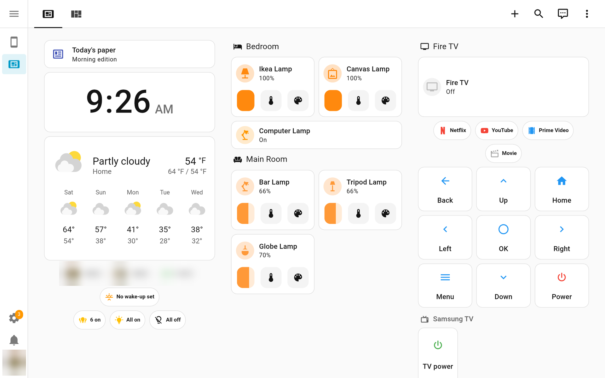
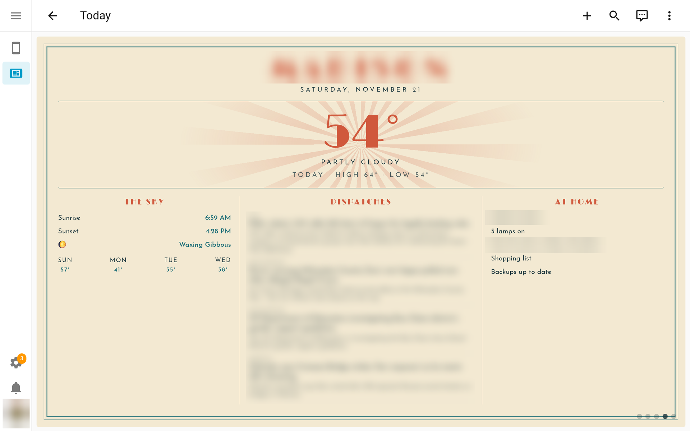
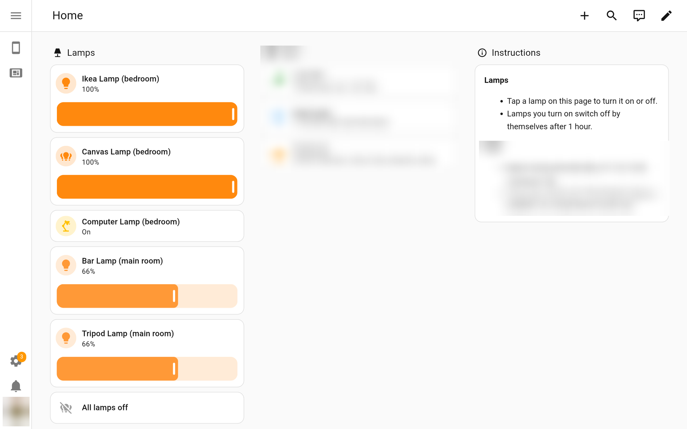
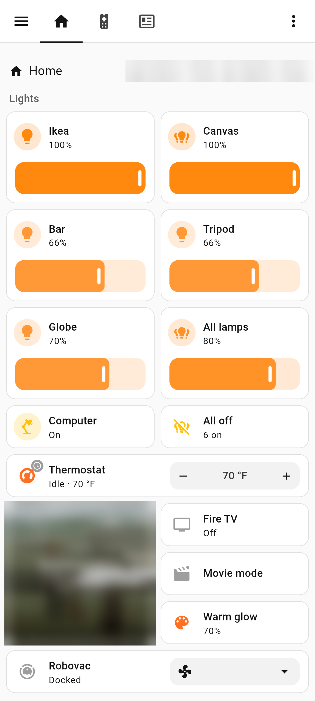

Home Server
A Mac mini in my apartment runs Home Assistant. It handles the lights, the TV, the thermostat, the robot vacuum, and the cat's feeder, and I built a dashboard for every screen in the place.
Overview
The server is a headless Mac mini running Home Assistant natively in a Python virtual environment. macOS launch agents start it, instead of Docker or Home Assistant OS, and a Matter server and Thread border router run alongside it for the newer bulbs. I reach it from outside the house through Tailscale without opening any ports. Every configuration change goes through a small check, validate, and restart script and then gets committed to Git, so I can roll back a bad change or rebuild the whole setup.
Dashboards and controls
The dashboards are built from Mushroom cards and card-mod. The wall tablet gets the full control panel, and my phone gets a compact version. There's also a "newspaper" page that puts the weather and the headlines on one screen. Lamps are grouped by room, Movie and Warm Glow set the whole room in one tap, and a wake-up routine brings the bedroom lamps up in the morning.
The Fire TV and the Samsung TV share one panel with a remote and a single TV power button. My Fire TV HUD runs off this same server, so the TV can show the lamps, modes, and alerts too.
When things break
The cat's feeder taught me the most. It missed a meal during a Wi-Fi outage because it was waiting on Home Assistant, so I flipped the design. Now the feeder runs its own schedule, and Home Assistant only watches it, alerts me if a meal is missed or the hopper runs low, and steps in as a backup. I also traced a recurring feeder lockup to a known firmware issue in the Tuya local protocol and wrote up a recovery procedure for it.
Custom cards kept failing to load after updates because the app cached an old resource list. I moved them to load through the frontend's extra module setting, and now Home Assistant injects them on every page load.
House-sitter mode
For trips, a vacation mode pauses the routines meant for when I'm home and holds the robot vacuum until just before I get back. A house sitter gets their own account with a stripped-down dashboard: lamp controls that switch themselves off after an hour, a way to feed the cat, and written instructions for the house. Everything else stays admin-only.
Screenshots



